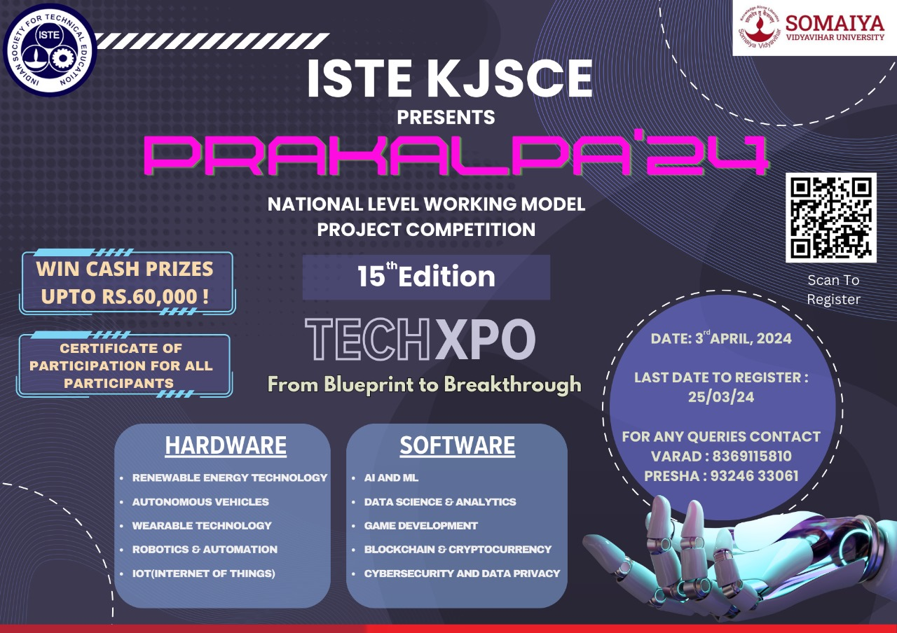
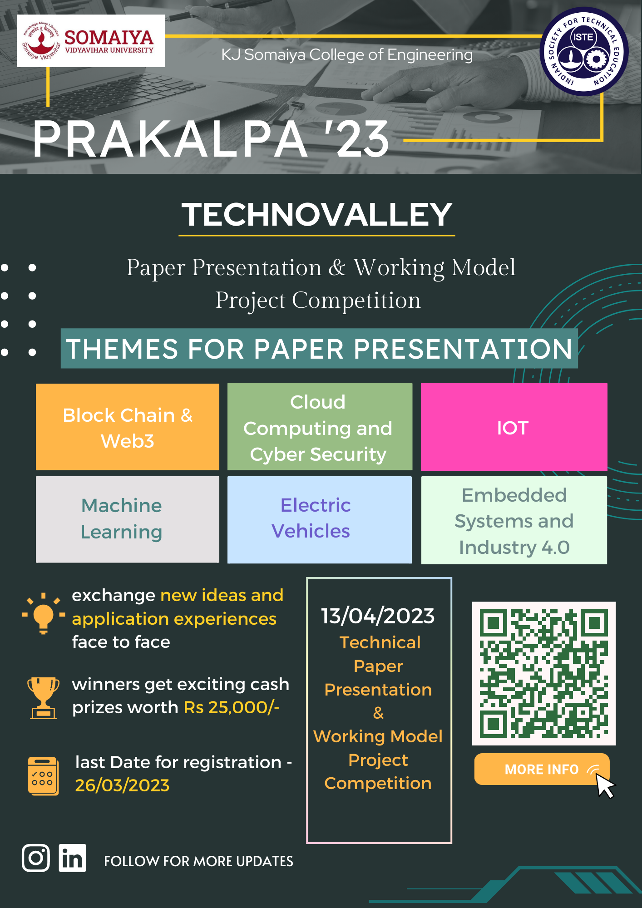
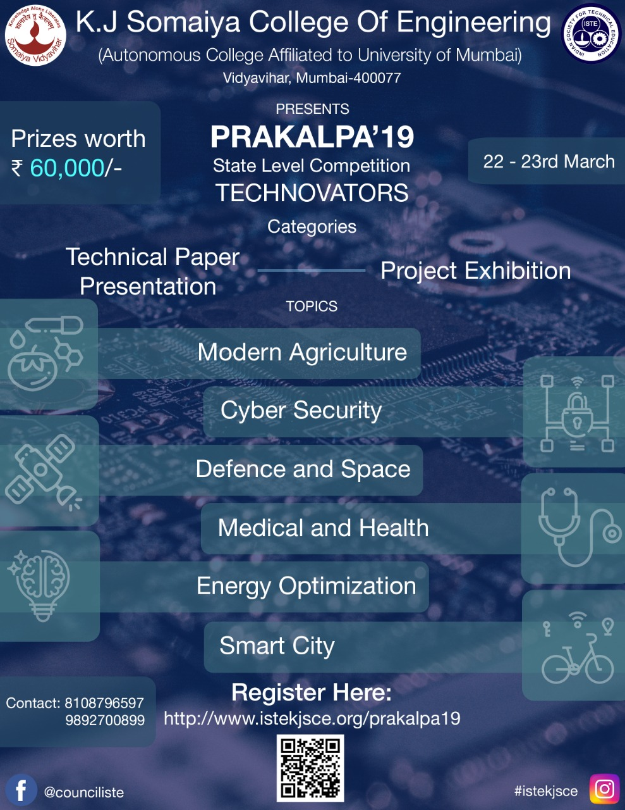
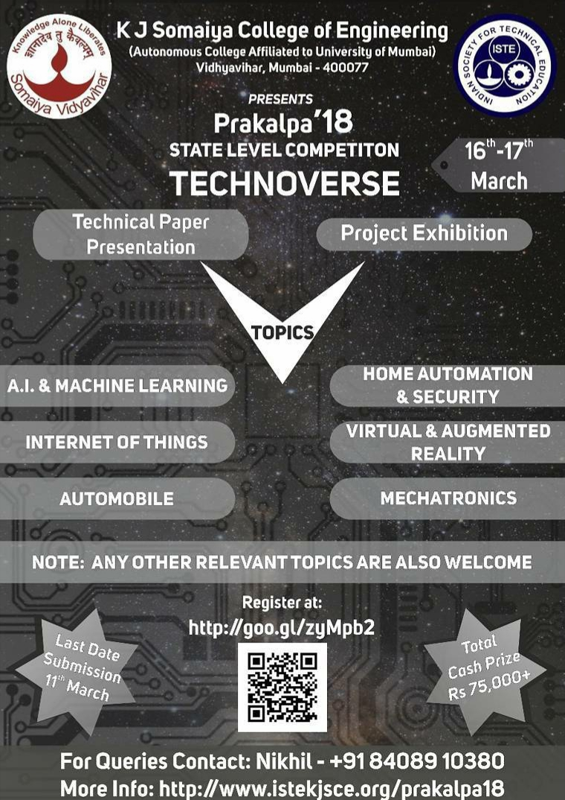
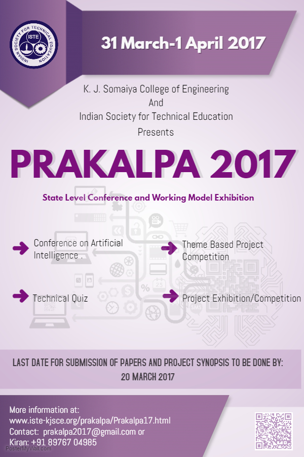
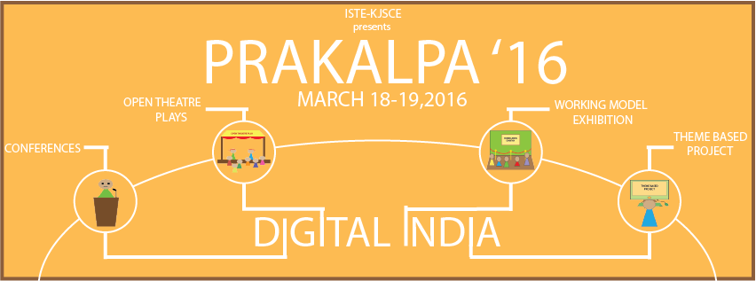
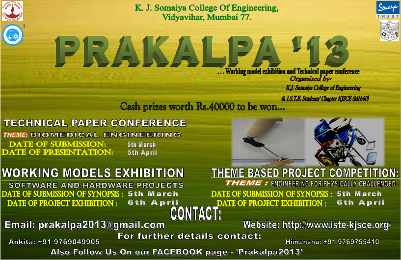
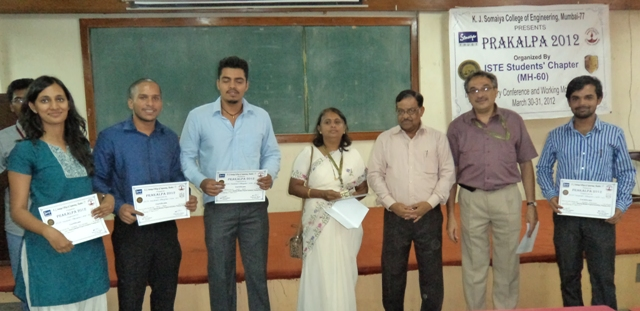

PRAKALPA 2024
Date Conducted : 3rd April 2024
Theme of Prakalpa : TECHXPO
Prakalpa’24, was back with its 15th edition featuring record-breaking entries of hardware and software projects, as well as research papers, with participants from beyond Maharashtra. PRAKALPA is a national-level event hosted annually by the ISTE Students' Chapter at K J Somaiya College of Engineering. The competition showcases technical paper presentations alongside a display of innovative working model projects.
Visit Website BROCHURE
PRAKALPA 2023
Date Conducted : 13th April 2023
Theme of Prakalpa : TECHNOVALLEY
ISTE-KJSCE is organizing the 14th PRAKALPA event on 13th April 2023. Open to all UG / PG students of engineering colleges, this national-level competition involves presenting technical abilities, exchanging new ideas, and implementing teamwork. PRAKALPA is a state-level competition that includes technical paper presentations and a working model project exhibition organized by ISTE Students' Chapter at K J Somaiya College of Engineering annually.
Visit Website BROCHURE
PRAKALPA 2019
Date Conducted : 22nd March -23rd March 2019
Theme of Prakalpa : TECHNOVATORS
PRAKALPA is a state level competition which includes technical paper presentation and working model project exhibition organized by ISTE Students' Chapter MH-60 at K J Somaiya College of Engineering annually. It is being conducted since the year 2006 and has been a remarkable success over the years has been growing a notch higher with each coming year. It has witnessed a participation of more than 500 students all over Maharashtra. This year, Prakalpa will be held on 22nd and 23rd March, 2019.
Visit Website BROCHURE
PRAKALPA 2018
Date Conducted : 6th and 17th March, 2018.
Theme of Prakalpa : TECHNOVERSE
PRAKALPA is a state level competition which includes technical paper presentation and working model project exhibition organized by ISTE Students' Chapter MH-60 at KJ Somaiya College of Engineering annually. It is being conducted since the year 2006 and has been a remarkable success over the years has been growing a notch higher with each coming year. It has witnessed a participation of more than 500 students all over Maharashtra. This year, Prakalpa will be held on 16th and 17th March, 2018.
Visit Website BROCHURE
PRAKALPA 2017
Date Conducted : 31st March - 1st April, 2017.
Theme of Prakalpa : Artificial Intelligence-Innovation towards Future
Prakalpa is a technical paper conference and working model/project competition organized by ISTE Council and K.J. Somaiya College of Engineering. This is a state-level competition which is conducted annually in K.J. Somaiya College of Engineering, Vidyavihar. This year prakalpa will be conducted on 31st March & 1st April, 2017. The competition is being organized since 2006 and now becoming more and more popular among the students.
Visit Website BROCHURE
PRAKALPA 2016
Date Conducted : 18th March and 19th March 2016.
Theme of Prakalpa : Digital India
Prakalpa is a technical paper conference and working model/project competition organized by ISTE Council and K.J. Somaiya College of Engineering. This is a state-level competition which is conducted annually in K.J. Somaiya College of Engineering, Vidyavihar. This year prakalpa will be conducted on 18, 19 March, 2016. The competition is being organized since 2006 and now becoming more and more popular among the students
Visit Website BROCHURE
PRAKALPA 2015
Date Conducted : 5th and 7th March 2015.
Theme of Prakalpa : Security Systems.
Prakalpa is a technical paper conference and working model/project competition organized by ISTE Council. This is a state-level competition which is conducted annually in K.J. Somaiya College of Engineering, Vidyavihar.
Visit Website BROCHUREPRAKALPA 2014
Date Conducted : 14th and 15th March 2014.
Theme of Prakalpa : Sustainable Development.
Prakalpa is a State level Competition organized by K. J. Somaiya College of Engineering and the ISTE Student Chapter — KJSCE since 2006.In 2011, Prakalpa included project exhibition of working models.
Visit Website BROCHURE
PRAKALPA 2013
Date Conducted : 5th and 6th April 2013.
Theme of Prakalpa : Enginnering for physically challenged.
Prakalpa is a State level Competition organized by K. J. Somaiya College of Engineering and the ISTE Student Chapter — KJSCE since 2006.In 2011, Prakalpa included project exhibition of working models.
Visit Website
PRAKALPA 2012
Date Conducted : 30th-31st March 2012.
Theme of Prakalpa : Enginnering for physically challenged.
Prakalpa is a State level Competition organized by K. J. Somaiya College of Engineering and the ISTE Student Chapter KJSCE since 2006.This year, Prakalpa includes Technical Paper Presentation (30th March) along with Working models exhibition (31st March).
Visit Website